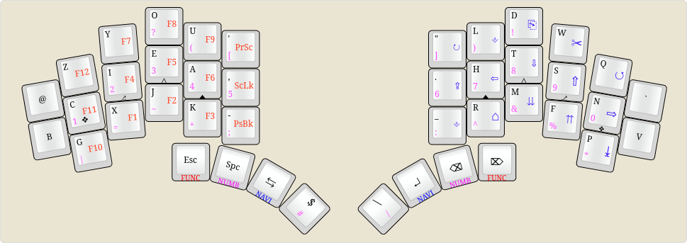

current board
Currently, I'm using a CRKBD Corne Rev 3 with a combination
miryoku and engram layout pictured here:
I have been using this "MiryoGram" layout for about a week.
Though this isnt the first time I've used a new layout, [in the
past I switched from QWERTY to Colemak...] I'm still struggling
to adjust to such a drastic change in layout :'3. I have another
"splayed" style board in the works right now, and I will have
pictures and a build log in the near future...
current projects
As of now, I have a new board in the works, a KLOR (designed bo
GEIGEIGEIST, and you can find that keeb
here.) I decided to go with the "polydactyl" layout, with an extra
pinky row and an additional key on the thumb cluster. I found
the Corne's extra column of three keys when you're already
playing extend-o pinky just to hit the At or Grave key to be
incredibly annoying.
I have the "new" layout for this keyboard pictured below and
when the time comes, the pictures of the completed build.
